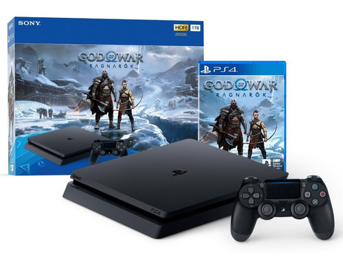
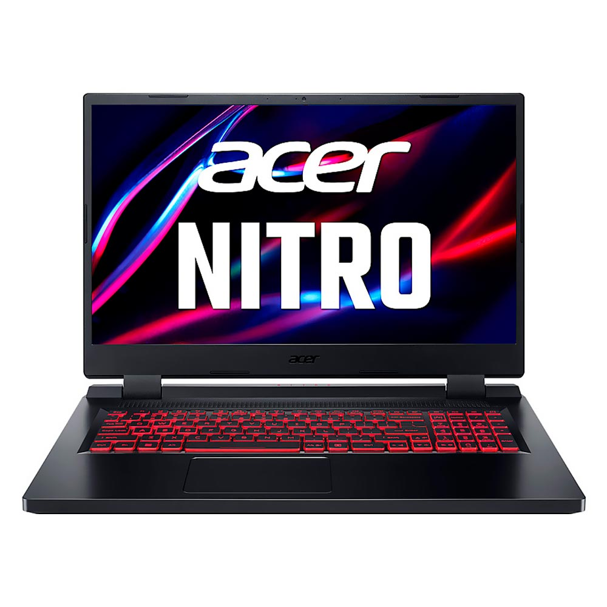
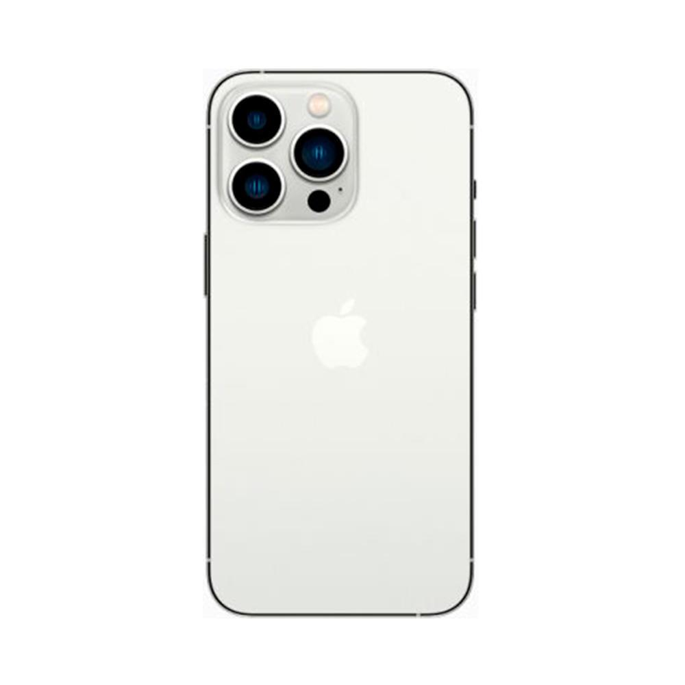

| Produto |
Foto do produto |
Descrições dos Produtos |
Comentarios dos Usuários |
Avaliação (%) |
| PlayStation 4 slim |
 |
Mais leve e mais fino, o sistema playstation 4 tem disco rígido de 1 tb para tudo o que há de melhor em jogos, músicas e muito mais!
Combina conteúdo sem igual, experiências de jogos imersivas, todos os seus aplicativos favoritos de entretenimento digital e recursos exclusivos do playstation
Você veio ao lugar certo; jogos exclusivos levam você a jornadas incríveis, desde jogos independentes elogiados pela crítica a sucessos premiados pela AAA
Produto bivolt |
- José Lima: O video game é muito bom,meu filho adorou!
- Luara Gonçalves: Os video game da Sony são bons, tenho as coleções desde do primeiro PlayStation!
- Julio Fernandes: Tive que pedi Troca do Produto, veio com defeito no analogico do controle. De resto muito bom!
|
4,2% |
| Notbook Acer Nitro 5 |
 |
Se você é do mundo dos games, curte jogar online pelo pc ou até se tá procurando um notebook potente para realizar sua atividades, sabe que equipamentos com bom desempenho fazem toda a diferença. E para te ajudar nisso, a Acer desenvolveu o notebook gamer Nitro 5 AN515-57-52ZQ. Esse modelo de notebook tem processador Intel Core i5 11400H - Six Core de 11ª Geração, 8GB de RAM e 512GB de SSD. Especificações que conseguem garantir uma performance fluida e com boa resposta. Sem falar que o armazenamento garante um bom espaço para os games ou programas mais pesados. O Acer Nitro 5 ainda conta com tela LED com design ultrafino de 15,6", resolução Full HD, painel IPS e 144Hz de frequência. Aí você aproveita o máximo da exibição e nitidez da tela. E para suportar um desempenho bom nos jogos, ele tem placa de vídeo dedicada NVIDIA GeForce GTX 1650 4GB GDDR6 (TGP de 50W). O sistema operacional é o Linux Gutta, teclado FineTip em português do Brasil (ABNT2) retroiluminado na cor vermelha, touchpad multigestual suportando rolagem com dois dedos e som com tecnologia DTS X Ultra Áudio. Eaí, preparado para navegar na velocidade Nitro? |
- Luan Ribeiro: Notebook chegou bem antes da data de entrega. Atende muito bem os programas que eu preciso para trabalhar como Autocad e Revit.
- Maria Lima: Um ótimo notebook, desempenho muito bom (não tive gargalos) e aguenta todos os jogos que eu gosto. Apenas adicionar mais 8gb de ram para deixar perfeito. O que eu mais fiquei satisfeito é a tela full hd com 144hz
- Carlos Farias: Compra excelente, ótimo preço e maquina show
|
5,0% |
| Iphone 13 Pro Max |
 |
Tela Super Retina XDR de 6,7 polegadas com ProMotion para uma sensação mais rápida e responsiva
O modo cinematic adiciona profundidade de campo rasa e muda o foco automaticamente em seus vídeos
Sistema de câmera Pro com novas câmeras 12MP Telefoto, Wide e Ultra Wide; LiDAR Scanner; Alcance do zoom ótico 6x; macro fotografia; Estilos fotográficos, vídeo ProRes, Smart HDR 4, modo noturno, Apple ProRAW, gravação 4K Dolby Vision HDR
Câmera frontal TrueDepth de 12 MP com modo noturno, gravação 4K Dolby Vision HDR
Chip biônico A15 para desempenho ultrarrápido |
- Lurdes Maria: Bateria com alta durabilidade, fotos perfeitas. Melhor iPhone que já comprei.
Entrega na data, chegou em perfeito estado.
- Marcus Souza: Produto muito bom!!! Atendeu muito bem minhas expectativas!!!
- Pedro Henrique: Fácil de usar, de instalar, de manusear, bateria varia conforme o uso, ágil, boa qualidade de foto da câmera.
Penas que não venha com carregador aqui no Brasil
|
3,5% |